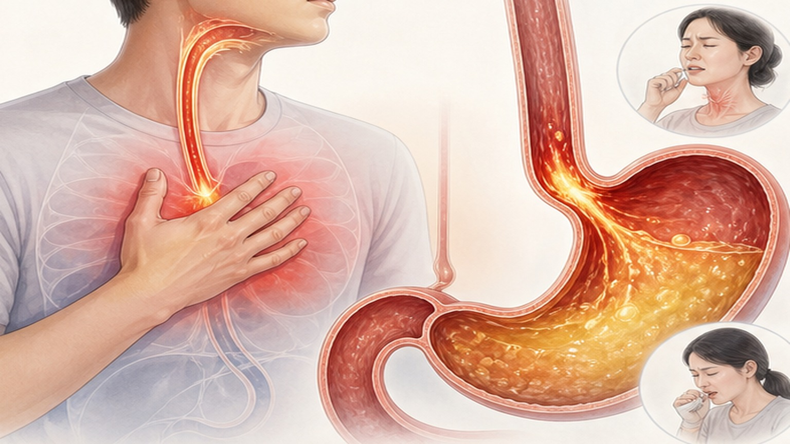
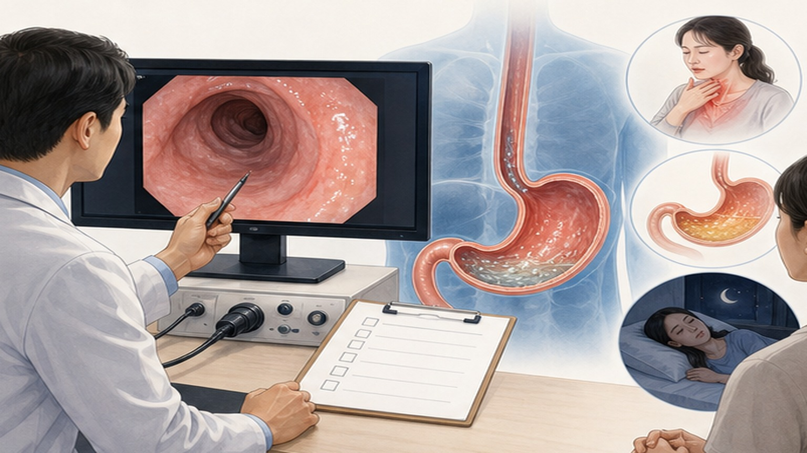
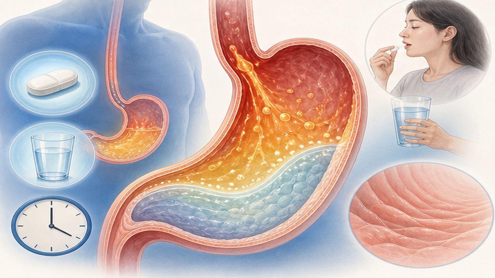
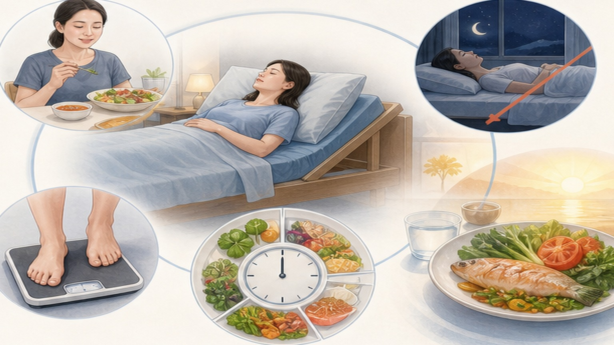

서구화된 식습관과 비만이 늘며 해마다 늘고 있습니다
위산이 식도 점막을 자극해 상처를 내는 만성 질환입니다

대표 증상과 함께, 역류가 원인인 줄 모르기 쉬운 증상도 살펴봅니다
조임근이 풀리고 배 속 압력이 오르는 일이 일상에서 쌓입니다
대표 증상이 뚜렷하면 먼저 진단하고 약으로 치료를 시작합니다

처방받은 기간을 지키는 것이 가장 중요합니다 — 내시경으로 확인된 경우 건강보험이 적용됩니다
| 약 종류 | 대표 약과 먹는 법 |
|---|---|
| 위산억제제(PPI) 1차 치료 | 에소메프라졸 등 · 식전 30~60분 · 하루 한 번 8주 시험 치료 |
| 칼륨경쟁적 위산억제제 | 테고프라잔·보노프라잔 · 식사와 상관없이, 빠르게 위산을 줄임 |
| H2 차단제·제산제 | 증상이 가벼울 때 보조로 · 바로 가라앉히려면 물약 제산제 |
| 위장운동 촉진제 | 위가 늦게 비워질 때 보조로 · 이것만 단독으로는 권하지 않음 |

사람마다 다릅니다. 내 증상을 나빠지게 하는 음식부터 피하세요
약과 함께 반드시 실천하세요

아래 증상이 있으면 혼자 관리하지 마시고 바로 내원하세요
작은 습관 변화가 약물치료의 효과를 결정합니다
증상이 달라지거나 궁금한 점이 있으면 언제든 내원해 주세요